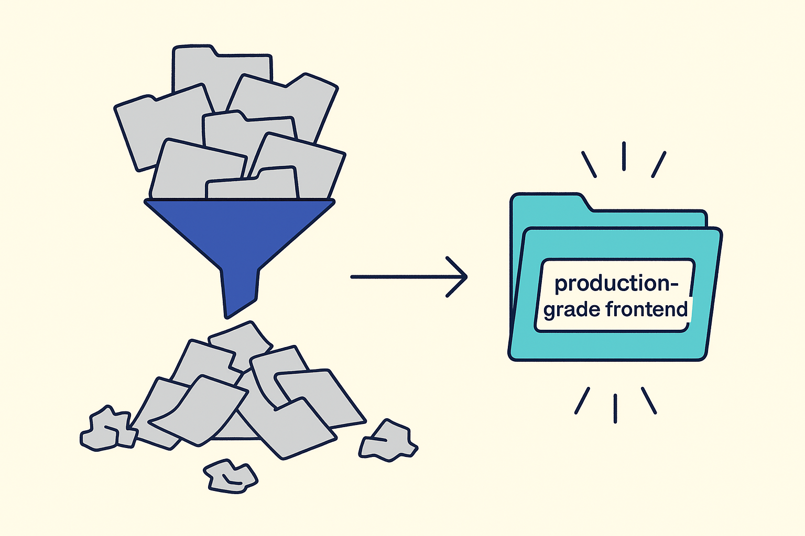
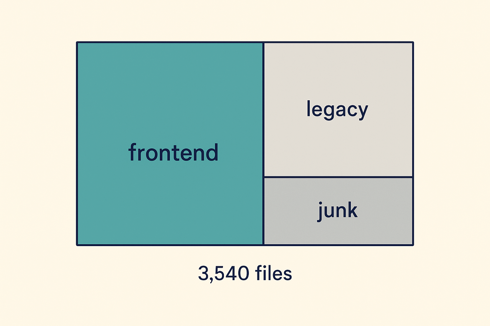
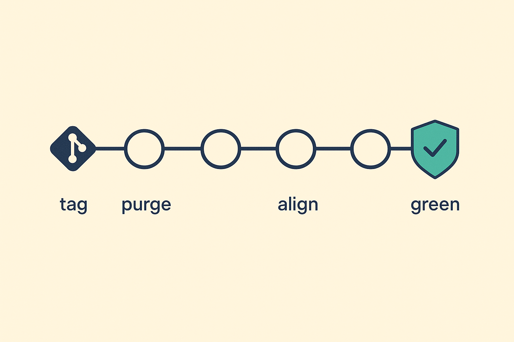
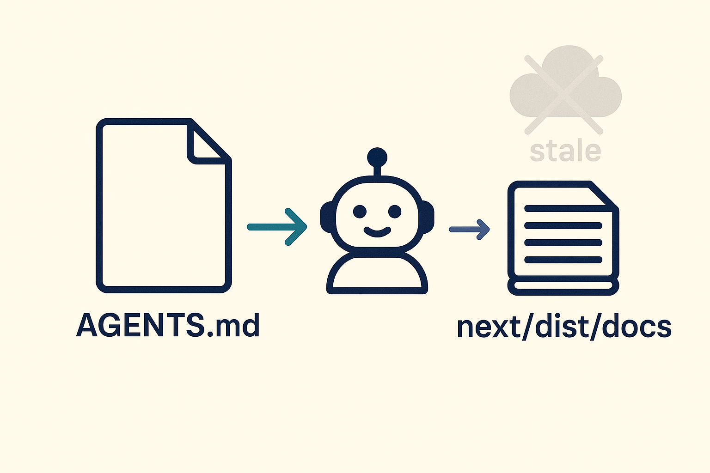

Plan: Production-Grade Frontend Cleanup
Purge ~2,100 tracked junk files and the legacy microservices era, delete confirmed dead frontend code and old-design remnants, and align the repo with Vercel's AI-agents convention (Next 16.2 bundled docs + AGENTS.md) — leaving one clean, production-grade Next.js frontend.

Purpose
Turn this repository into a clean, production-grade frontend codebase: only the active Next.js app and its living docs remain in the working tree, every quality gate (lint / test / build) covers the whole tree and passes, the Humi design system has zero old-design violations, and AI coding agents are pointed at version-matched Next.js docs via the official Vercel AI-agents convention (AGENTS.md → node_modules/next/dist/docs/).
Problem
The repo carries three generations of history in one working tree. Of 3,540 tracked files, only ~1,400 belong to the active product (src/frontend). The rest is slop that misleads both humans and AI agents:
| Category | Evidence | Weight |
|---|---|---|
| Legacy backend era | src/services/ 14 NestJS microservices (955 tracked files), src/infra/, docker-compose.yml, tsconfig.base.json, root .eslintrc.json | 322 MB |
| Removed-SPA era | root playwright.config.ts serves python -m http.server 8080 -d apps — the apps/ SPA no longer exists; root tests/ (93 files) hit localhost:8080; root package.json test:* scripts all point there | 13 MB |
| Test-result & planning junk (tracked) | planning/ 326 files (183 MB), test-artifacts/ 156, test-pages/ 38, agents/ 43, projects/ 26, deliverables/, reports/, spec-task/, stray root files (HANDOFF.md, showcase_deck_build.py, .AGENTS.md.bkup…) | ~300 MB |
| Untracked local junk | src/frontend/.next 1.2 GB, test-results 65 MB, logs 46 MB, playwright-report 23 MB, root logs/, plan-assets/, artifacts/, chrome/; .env with live API keys is NOT gitignored | ~1.5 GB |
| Dead frontend code | use-employee.ts, ec-personal-info.tsx, employment.tsx (0 product importers each), components/onboarding/, 5 of 6 manager-dashboard/ files, tracked .archive-2026-04/ old-design pages, duplicate test files | ~15 files |
| Old-design violations | 8 NO-RED guardrail breaks (raw red hex / ring-red-500), 27 hardcoded hex occurrences (worst: learning-page.tsx ×10, referral-letter-preview.tsx ×9) | 8 files |
| Fake quality gates | lint is a hardcoded allowlist of ~60 file paths — the other ~1,300 frontend files are never linted; design-drift ESLint rules are warn-only; 7 disabled tests (it.skip/describe.skip/it.todo) | gate-wide |
| Doc rot | agents get told README.md is stale (it isn't anymore), docs/ mixes 3 living design docs with pptx/pdf/xlsx/png dumps, no AGENTS.md per Vercel convention (Next is 16.1.6; bundled docs need 16.2+) | 34 MB |

Solution
Seven ordered phases. First a safety net (land in-flight work, tag archive/pre-clean-2026-07 so git history is the permanent archive — nothing is ever lost). Then purge repo-root junk, retire the legacy backend and flatten the root workspace to frontend-only, adopt the Vercel AI-agents convention (upgrade Next 16.1.6 → 16.2.10, write the marker-delimited AGENTS.md, make CLAUDE.md import it), delete dead frontend code and fix every NO-RED / hardcoded-hex violation, replace the fake lint allowlist with whole-tree gates, and finally consolidate docs/ + specs/ so the remaining documentation is all load-bearing. Every phase ends with a green build + vitest checkpoint and its own commit, so the work is reversible step by step.

Relevant Files
Existing Files
- existing
package.json(root) — legacy monorepo scripts (db:*,test:*→ removed SPA); rewrite to a thin frontend-only workspace - existing
.gitignore— misses.env,plan-assets/,artifacts/,*.tsbuildinfo; harden - existing
AGENTS.md/CLAUDE.md/README.md(root) — rewrite for the cleaned repo + Vercel nextjs-agent-rules block - existing
playwright.config.ts(root) — targets the removedapps/SPA on :8080; delete - existing
src/frontend/package.json— Next^16.0.0→16.2.10; replace the ~60-filelintallowlist - existing
src/frontend/eslint.config.mjs— promote design-drift ruleswarn→error - existing
src/frontend/src/hooks/use-employee.ts— dead (0 importers); delete - existing
src/frontend/src/components/profile/tabs/ec-personal-info.tsx— dead (0 importers); delete - existing
src/frontend/src/components/profile/tabs/employment.tsx— test-only orphan (0 product importers); delete with its TWO tests (sf-parity-employment.test.tsx+employment-edit.test.tsx) - existing
src/frontend/src/components/onboarding/,manager-dashboard/(5 of 6 files) — orphaned; delete after import re-check - existing
src/frontend/src/app/[locale]/admin/employees/[id]/probation/page.tsx— raw red hex trio#FEF2F2/#EF4444/#B91C1C; retoken - existing
src/frontend/src/app/[locale]/admin/system/security/traffic/page.tsx,src/components/admin/wizard/CompanyTypeahead.tsx—ring-red-500; retoken - existing
src/frontend/src/components/learning/learning-page.tsx,src/components/hospital-referral/referral-letter-preview.tsx— 19 hardcoded hex between them; retoken - existing
src/services/,src/infra/,tests/,test-pages/,test-artifacts/,planning/,agents/,projects/,deliverables/,reports/,spec-task/— tracked junk;git rmafter archive tag
New Files
- new
AGENTS.md(rewritten, root) — Vercel<!-- BEGIN:nextjs-agent-rules -->block + condensed project rules (Humi tokens, NO-RED, RBAC remove-not-hide, quick-approve umbrella, TH/EN parity) - new
src/frontend/AGENTS.md— thin pointer for agents launched withsrc/frontendas cwd - new
src/frontend/scripts/check-i18n-parity.mjs— fails on any en.json/th.json key drift or empty value (Phase 5.3 parity gate) - new
src/frontend/src/__tests__/i18n-parity.test.ts— Vitest wrapper so parity drift surfaces innpm test - new
specs/README.md— one-paragraph policy: specs are plans, git history is the archive, no generated assets
Implementation Phases
IMPORTANT: Execute every phase and task step by step, in order, top to bottom. Each phase lands as its own commit so any step can be reverted independently.
Status markers: [] idle · [wip] in progress · [x] complete · [f] failed. All start as []; the Build Plan workflow updates them as it works.
[] Phase 0: Safety Net & Baseline
Nothing is deleted until history is pinned and the working tree is clean. Git history becomes the permanent archive — "delete" in later phases always means "remove from the working tree", never "lose".
0.1 Land in-flight work
[]git statusshows ~27 modified files (test updates,AppShell.tsx,approval-registry.ts) plus untracked e2e evidence suite — confirm no other session is mid-flight on them (two-session workflow), then commit them as their own commit(s) BEFORE any cleanup work[]Triage untracked keepers:specs/*.htmlplans,docs/testing-evidence-csv.md,learning/12-two-session-workflow-tools.md,src/frontend/e2e/evidence-*— commit the ones that are real work; leave.env/.omo/untracked
0.2 Pin the archive point
[]git tag archive/pre-clean-2026-07 && git push origin archive/pre-clean-2026-07— permanent pointer to the full pre-cleanup tree[]Create working branch:git checkout -b chore/production-grade-cleanup
0.3 Testing Strategy
Record the green baseline so later phases can prove they broke nothing. Any test already failing at baseline gets noted, not silently fixed.
[]cd src/frontend && npm run build— baseline build green[]cd src/frontend && npx vitest run— record pass/fail counts as the baseline[]git tag -l 'archive/pre-clean*'— tag exists and is pushed
[] Phase 1: Repo-Root Junk Purge
Remove every tracked directory/file that serves a dead era, and harden .gitignore so the junk cannot re-accumulate. This phase touches nothing inside src/frontend, so it cannot break the app.
1.1 Remove tracked junk (git rm)
[]git rm -r tests/ test-pages/ test-artifacts/ planning/ agents/ projects/ deliverables/ reports/ spec-task/ .ironteam/[]git rm .ironteam_done showcase_deck_build.py HANDOFF.md DEMO-WALKTHROUGH-2026-04-W4.md start.md .AGENTS.md.bkup tokens.humi.json tailwind.theme.humi.json playwright.config.ts[]git rm -r src/components src/i18n— root-level stub dirs containing only staleCLAUDE.mdfiles (NOTsrc/frontend/src/…)[]Keep:.gates.config.json(points at the live Sidebar),DESIGN.md,scripts/(used byaudit:fieldsandbuild:address),learning/,specs/,docs/(trimmed in Phase 6)
1.2 Delete untracked local junk
[]rm -rf plan-assets/ artifacts/ logs/ chrome/ test-result/ test-results/ .codex/ .omx/ .ouroboros/ .ouroboros_eval_artifact.md .debug-journal.md .clawhip/— all untracked runtime state (verify each withgit ls-files <path> | wc -l= 0 first)[]Inside frontend:rm -rf src/frontend/test-results src/frontend/playwright-report src/frontend/test-artifacts src/frontend/logs(~160 MB; regenerated on demand — leave.nextalone, the delete hook blocks it and dev regenerates it)
1.3 Harden .gitignore
[]Add.envand.env.*(keep!.env.example) —.envholds live API keys and is currently unignored; verify it was never committed withgit log --all --oneline -- .env(if it ever was, rotate the keys)[]Add*.tsbuildinfo,plan-assets/,artifacts/,.omo/,.codex/,.omx/,.ouroboros/,.debug-journal.md[]Remove gitignore entries for paths that no longer exist after this phase (optional tidy)
1.4 Testing Strategy
Pure removals outside the app — prove the app didn't notice, and the junk is really gone from the index.
[]cd src/frontend && npm run build— still green[]git ls-files | wc -l— dropped by ~700+ (from 3,540)[]git check-ignore .env— exits 0 (now ignored)[]Commit:chore(repo): purge legacy-era root junk (archived at tag archive/pre-clean-2026-07)
[] Phase 2: Legacy Backend Retirement & Root Flattening
Retire the NestJS microservices era from the working tree and turn the root package.json into a thin frontend-only workspace. The frontend's dependencies are hoisted into the root node_modules, so workspace changes must be followed by a clean install.
2.1 Remove the legacy backend
[]git rm -r src/services src/infra(955 + 28 tracked files, 322 MB)[]git rm tsconfig.base.json .eslintrc.json docker-compose.yml— NestJS build config, legacy lint config, and the Postgres/Redis/Keycloak stack nothing in the mockup phase uses[]grep -rn "services/shared" src/frontend/vitest.config.ts src/frontend/tsconfig.json— vitest aliases../services/shared; remove the alias and any import that used it (fix or inline the shared type)
2.2 Rewrite root package.json
[]Workspaces:["src/frontend"]only; drop alldb:*,seed,infra:*,test:*(SPA-era),dev(docker) scripts[]New thin scripts:"dev" / "build" / "test" / "lint" / "test:e2e"→npm run <script> --workspace src/frontend; keepaudit:fields(usesscripts/+tsx)[]Prune devDependencies to what remains: keeptsx; dropconcurrently,ts-node, rooteslint@8stack, rootplaywrightduplicates (frontend has its own@playwright/test)[]BEFORE deleting rootnode_modules:git worktree list— if ANY linked worktree exists, itsnode_modulesis a symlink INTO this root tree, sorm -rf node_moduleswill break every sibling worktree's install. Either remove/settle those worktrees first, or re-create their symlinks after the reinstall (see Notes → worktree-symlink trap)[]rm -rf node_modules package-lock.json && npm install— regenerate the hoisted tree without 14 services' deps
2.3 Testing Strategy
The risk here is hoisting: frontend deps resolve from root node_modules. A clean install plus full build/test proves resolution still works.
[]npm run build(from root, via the new proxy script) — green[]cd src/frontend && npx vitest run— matches Phase 0 baseline[]npm run dev— app boots; verify the served URL/port from the startup output (see the port trap in Notes) andcurl -sI localhost:<port>/en/homereturns 200/307[]Commit:chore(repo): retire legacy NestJS services + flatten root workspace to frontend-only
[] Phase 3: Vercel AI-Agents Alignment
Adopt the convention from nextjs.org/docs/app/guides/ai-agents: Next ≥ 16.2 bundles version-matched docs at node_modules/next/dist/docs/, and a marker-delimited AGENTS.md redirects agents from stale training data to those docs. CLAUDE.md imports it via @AGENTS.md so nothing is duplicated.

3.1 Upgrade Next.js 16.1.6 → 16.2.10 (latest stable)
[]Insrc/frontend/package.json:"next": "16.2.10";npm installfrom root[]ls node_modules/next/dist/docs/index.mdx— bundled docs now present (they are absent in 16.1.6)[]Read the 16.2 release notes in the bundled docs (node_modules/next/dist/docs/) for breaking changes; fix any build/type errors the minor bump surfaces[]Fallback ONLY if the upgrade is blocked:npx @next/codemod@latest agents-md(emits docs to.next-docs/and points the agent files there); gitignore.next-docs/
3.2 Write the agent files
[]Rewrite rootAGENTS.md: open with the exact<!-- BEGIN:nextjs-agent-rules -->…<!-- END:nextjs-agent-rules -->block from the guide ("Before any Next.js work, readnode_modules/next/dist/docs/— training data is outdated"); below the markers keep ONLY the still-true project rules: active app =src/frontend, Humi tokens inglobals.css, NO-RED (pumpkin danger), RBAC menu = remove not hide, approvals only via/quick-approve, TH/EN message parity[]RootCLAUDE.md: first line@AGENTS.md, then trim the body to current reality — delete the stale "README describes microservices + vanilla apps/ SPA" claim (README was already rewritten), delete the Infrastructure/Keycloak section (compose is gone), fix the default-locale statement to matchsrc/i18n/config.ts+next.config.tsredirects (EN-first per PR #302)[]Add thinsrc/frontend/AGENTS.md(agents often start with cwd =src/frontend): same nextjs-agent-rules block + one line pointing to the rootAGENTS.md[]RefreshREADME.md: single-app repo, quickstart (npm run dev), design-doc pointers; drop the "Legacy / Historical" microservices section (history lives at the archive tag)
3.3 Testing Strategy
Prove the upgrade is safe and the convention is actually wired, not just written.
[]cd src/frontend && npm run build— green on 16.2.10[]cd src/frontend && npx vitest run— matches baseline[]grep -c "BEGIN:nextjs-agent-rules" AGENTS.md src/frontend/AGENTS.md— 1 each;head -1 CLAUDE.md=@AGENTS.md[]grep -rn "apps/\|src/services\|Keycloak" README.md CLAUDE.md AGENTS.md— no live references to dead eras (archive-tag mention is fine)[]Commit:feat(agents): adopt Vercel AI-agents convention — Next 16.2.10 bundled docs + AGENTS.md
[] Phase 4: Frontend Dead Code & Old-Design Removal
Delete the confirmed-dead files, dedupe copy-pasted tests, and eliminate every old-design remnant that violates the Humi guardrails. Every deletion is re-verified with a fresh importer grep immediately before rm — findings age fast in a two-session repo.
4.1 Delete dead code (re-verify each with grep first)
[]src/hooks/use-employee.ts— 0 importers (NOT the same as the livelib/admin/store/useEmployees)[]src/components/profile/tabs/ec-personal-info.tsx— 0 external importers[]src/components/profile/tabs/employment.tsx— component kept alive only by tests (0 product importers). Delete it together with BOTH its tests:src/components/__tests__/sf-parity-employment.test.tsxANDsrc/components/__tests__/employment-edit.test.tsx[]src/components/onboarding/— 0 importers anywhere[]src/components/manager-dashboard/: deleteMiniOrgChart,PendingApprovalsPanel,TeamMemberGrid,TeamSummaryCards,UrgentAlertBanner(0 importers); KEEPTeamCalendar(2 importers) — relocate it or leave the dir with one file[]git rm -r src/frontend/src/app/.archive-2026-04/(verify exact path) — tracked old-design pages explicitly archived in-tree[]Untracksrc/frontend/scripts/audit/deck-capture leftovers still in the index (.gitignorealready coversdeck-capture/;git rm --cachedany stragglers, keep local copies — the deck-swap recipe still uses them)
4.2 Dedupe duplicate tests
[]HirePage.ux-refactor.test.tsxexists in BOTHsrc/__tests__/admin/andsrc/app/[locale]/admin/hire/__tests__/— diff them, keep the co-located one, fold any unique cases in, delete the other[]Same treatment forhireSchema.test.tsandowner-guard.test.tsxduplicates (co-located copy wins)
4.3 Fix NO-RED guardrail violations (danger = pumpkin, never red)
[]admin/employees/[id]/probation/page.tsx:120-122— replace#FEF2F2/#EF4444/#B91C1Cwithvar(--color-danger-soft)/var(--color-danger)tokens[]admin/employees/[id]/terminate/page.tsx:537andlib/admin/crud-template/createCrudPage.tsx:243— drop the red hex fallbacks, keep the token var only[]admin/system/security/traffic/page.tsx:99andcomponents/admin/wizard/CompanyTypeahead.tsx:205—ring-red-500→ring-[var(--color-danger)][]src/__tests__/admin/ProfileEdit.test.tsx:66— update thetext-red-500assertion to the token class the fix produces
4.4 Retokenize remaining hardcoded hex
[]components/learning/learning-page.tsx(10 hexes) andcomponents/hospital-referral/referral-letter-preview.tsx(9) — map each to the nearest Humi token; if a color has no token, use the documented palette var, never a new hex[]components/admin/EffectiveDateGate/EffectiveDateGate.tsx(1) — same[]Mock-data audit (do NOT blind-merge):grep -rn "humi-mock-data-sf-parity\|humi-mock-data-sf-real" src --include='*.ts*' -l— if either variant has no live importers, fold what's used intohumi-mock-data.tsand delete it; if both are live, add a header comment to each stating its distinct role
4.5 Testing Strategy
Vitest full run after each deletion batch catches transitively-broken imports; grep proves the design sweep is complete, and a visual spot-check (per the verify-rendered-output rule) confirms the retokenized screens still look right.
[]cd src/frontend && npx vitest run— green (minus the intentionally deleted tests)[]grep -rEn "#(EF4444|B91C1C|FEF2F2|FEE2E2|dc2626)|ring-red-500|text-red-500" src/frontend/src --include='*.ts*'— zero hits[]cd src/frontend && npm run build— green[]Playwright screenshot ofprobation,learning, andreferral letterscreens — danger states render pumpkin, layouts unchanged[]Commit:chore(frontend): remove dead code + old-design remnants; enforce NO-RED tokens
[] Phase 5: Real Quality Gates
The current lint script enforces on ~60 hand-listed files out of ~1,400 — a fake gate. Replace it with whole-tree linting, promote the design-drift rules to errors, and resolve every disabled test so the suite reports the truth.
5.1 Whole-tree lint
[]Replace the allowlist:"lint": "eslint src e2e --max-warnings=0"insrc/frontend/package.json[]First run will surface a backlog — triage: auto-fix (--fix) what's mechanical; fix real issues by hand; for rules that are genuinely wrong for this codebase, adjust the rule once ineslint.config.mjswith a comment, never per-file disables scattered around[]Promote design-drift bans (bg-white,rounded-xl,rounded-lg,dark:) fromwarn→error; fix the violations they reveal
5.2 Resolve disabled tests (implement or delete, never leave skipped)
[]resignation-page.timeline.test.tsx— 3×it.skip(AC-4): implement if the timeline feature exists, else delete the skips with a one-line note in the commit[]me-documents.test.tsx:265— 1×it.skip(AC-7b): same decision[]admin/StepIdentity.test.tsx— 2×describe.skip(whole suites off): un-skip and fix, or delete the dead suites[]StepBAAttachments.regression.test.tsx:134—it.todostub: implement or remove[]Leave the e2e runtime guards (test.skip()when dev server unreachable) — those are conditions, not disabled tests
5.3 Automate the i18n TH/EN parity gate
TH/EN message parity is a hard project rule (CLAUDE.md) but is enforced only by convention today — nothing fails when a key lands in en.json but not th.json (or is left empty). Turn it into a real gate so the mockup can't ship half-translated strings.
[]Addsrc/frontend/scripts/check-i18n-parity.mjs: deep-collect the key paths ofmessages/en.jsonandmessages/th.json; exit non-zero on any key present in one but not the other, or any empty-string value[]Wire it BOTH ways: ai18n:paritynpm script AND a Vitest test (e.g.src/__tests__/i18n-parity.test.ts) so a drift shows up in the normalnpm testrun, not only in CI[]Run it once and fix whatever real drift the ~5.6k-line catalogs already contain before the gate goes green
5.4 Testing Strategy
The gates themselves are the test — all must pass over the WHOLE tree with zero suppressions added in this phase.
[]cd src/frontend && npm run lint— green oversrc+e2e,--max-warnings=0[]grep -rn "it.skip\|describe.skip\|it.todo\|test.only\|describe.only" src/frontend/src— zero hits[]cd src/frontend && node scripts/check-i18n-parity.mjs— exits 0 (en/th key sets identical, no empty values)[]cd src/frontend && npx vitest run— green (incl. the new i18n-parity test)[]cd src/frontend && npm run build— green (TS gate)[]Commit:chore(quality): whole-tree lint gate + i18n parity gate + resolve all skipped tests
[] Phase 6: Docs & Specs Consolidation
Keep only load-bearing documentation. Living design docs stay; generated decks, screenshot dumps, and superseded plans move to git history via the archive tag.
6.1 docs/ triage
[]KEEP:design-system-humi.md,humi-components.md,humi-shell-port-notes.md(referenced by AGENTS/CLAUDE),prd.md,two-session-workflow.md, BA source spreadsheets (User_Stories_HR_Solution.xlsx,time-module/source/list-of-value.xlsx— inputs to the ec-field-mapper flow)[]git rm:central-group-hrms-presentation.pdf,HR-Humi-presentation.pptx,hr-platform-features-infographic.png,deck-script-TH.md,docs/presentation/,docs/mockup/*.png,docs/design-ref/**/uploads/*.png,docs/time-module/source/wfs-screenshots/,docs/test-results/,epic-breakdown-fe-be.xlsx(md twin stays)[]Sweep the remaining docs for references to deleted paths (apps/,src/services, port 8080) and fix or drop those docs
6.2 specs/ policy + trim
[]Writespecs/README.md: specs are plans/decision records; git history is the archive; no generated screenshots or result dumps belong here[]git rmgenerated result artifacts insidespecs/: the 7.jsonresult files, stray.pngdumps, and asset dirs of plans that shipped; keep all.md/.htmlplans and the image dirs of ACTIVE plans (including this one)[]learning/: keep all 13 chapters; grep them for paths deleted in Phases 1–2 (e.g.src/services, docker) and update the affected passages — the curriculum must describe the cleaned repo Ken will actually maintain
6.3 Testing Strategy
Doc-only phase — validation is greps proving no doc points at a ghost, plus the standing app gates.
[]grep -rln "src/services\|localhost:8080\|apps/" docs/ learning/ *.md | grep -v archive— zero live references (historical mentions explicitly marked as archived are fine)[]cd src/frontend && npm run build— still green[]Commit:docs: consolidate to load-bearing docs; archive decks + superseded specs
Validation Commands
Execute these commands from the repo root to validate the entire plan is complete:
[]cd src/frontend && npm run build— production build green on Next 16.2.10[]cd src/frontend && npx vitest run— full unit/integration suite green, zero skipped[]cd src/frontend && npm run lint— whole-tree ESLint green with--max-warnings=0[]cd src/frontend && node scripts/check-i18n-parity.mjs— en.json/th.json parity holds (no key drift, no empty values)[]ls node_modules/next/dist/docs/index.mdx && grep -q "BEGIN:nextjs-agent-rules" AGENTS.md— Vercel AI-agents convention wired[]test ! -d src/services && test ! -d tests && test ! -d planning && test ! -d test-artifacts && test ! -d test-pages— junk eras gone from the tree[]grep -rEn "#(EF4444|B91C1C|FEF2F2|dc2626)|ring-red-500" src/frontend/src --include='*.ts*' | wc -l— 0 (NO-RED holds)[]git ls-files | wc -l— ≤ ~1,700 (from 3,540)[]git tag -l 'archive/pre-clean*'— archive tag exists on origin (nothing was lost)[]cd src/frontend && npm run test:e2e -- --project=chromium— smoke e2e against the running dev server passes
Notes
chore/production-grade-cleanup) merged as one reviewed PR series.
src/frontend/package.json says next dev --port 3000 and CLAUDE.md agrees, but session memory records this repo actually serving on :4000 with :3000 belonging to a different sibling project (cnext/humi). Before any live verification, read the port from the dev server's own startup output and confirm the cwd of the process (lsof -p <pid>) — do not trust either doc.
.env exposure. Root .env (contains live API keys) is currently NOT in .gitignore — only luck has kept it untracked. Phase 1.3 fixes the ignore; if git log --all -- .env shows it was ever committed, rotate every key in it before doing anything else.
node_modules, and any linked git worktree gets its node_modules as a symlink back into that root tree (the fast alternative to a per-worktree npm install). So Phase 2's rm -rf node_modules package-lock.json at root will silently break the install of every active worktree. Run git worktree list first; if worktrees exist, settle/remove them before the reinstall, or re-point their node_modules symlinks at the freshly-installed root afterward. Combined with the two-session trap, treat Phase 2 as a stop-the-world step — no sibling session should be building against this repo while it runs.
archive/pre-clean-2026-07, then git rm. No archive/ directory is created — a junk folder renamed is still a junk folder. Anyone needing the old microservices, planning docs, or decks checks out the tag. This is what keeps the working tree production-grade without losing a byte of history.
node_modules/next/dist/docs/) requires ≥ 16.2.0-canary.37; stable 16.2.10 is out and is a minor bump from the installed 16.1.6. Upgrading gets version-matched docs forever (every future npm install refreshes them) whereas the codemod snapshot in .next-docs/ goes stale. The codemod remains the documented fallback if 16.2 surfaces a blocking regression.
humi-mock-data* variants — Phase 4.4 only merges if the importer audit proves a variant dead; these seeds are how HR judges the design. (4) The 20+ legacy-route redirects in next.config.ts — they are cheap, user-facing bookmarks may depend on them; revisit after HR sign-off. (5) src/frontend/.omc, .skills, .claude — live agent tooling, not slop.
lint/test/build are real whole-tree gates; agents onboard from two accurate files (AGENTS.md + CLAUDE.md) plus version-matched Next docs; and Ken's learning/ curriculum describes the repo that actually exists.
Execution order & sizing
| Phase | Risk | Effort | Depends on |
|---|---|---|---|
| 0 Safety net | low | S | — |
| 1 Root purge | low (outside app) | S | 0 |
| 2 Backend retirement + flatten | medium (hoisting) | M | 1 |
| 3 Vercel alignment (Next 16.2) | medium (upgrade) | M | 2 |
| 4 Dead code + design sweep | medium (deletions) | M | 0 (parallel with 1–3 if in worktree) |
| 5 Real quality gates | high effort, low risk | L — the lint backlog is the unknown | 4 |
| 6 Docs/specs consolidation | low | S–M | 1–3 (paths must be final) |
Amendments
2026-07-09T01:52:00+07:00 — Fact-check corrections + two added gates (worktree-symlink, i18n parity)
Reviewed the plan against the live tree and applied three surgical fixes, all verified by grep/CLI:
1. employment.tsx test count. Phase 4.1 and the Relevant Files entry said the component was kept alive by "its lone test". A grep found two test importers (sf-parity-employment.test.tsx AND employment-edit.test.tsx) and zero product importers — so the test-only verdict stands, but the deletion must remove BOTH tests. Updated both mentions.
2. Worktree-symlink trap (Phase 2). Added a checklist pre-step (git worktree list before rm -rf node_modules) and a risk callout in Notes. In this workspace repo, linked worktrees get their node_modules as a symlink into the root tree, so Phase 2's root reinstall would silently break every active worktree — a hazard the original plan (which covered hoisting but not worktrees) missed.
3. i18n TH/EN parity gate (Phase 5). TH/EN parity is a hard project rule but was enforced only by convention. Added task 5.3 (a check-i18n-parity.mjs script + a Vitest wrapper), renumbered Testing Strategy to 5.4, and added the parity check to both the phase and global validation command lists, plus two New Files entries.
Confirmed-accurate original claims left untouched: src/services 955 files, .env unignored (and never tracked), use-employee/ec-personal-info 0 importers, 7 skipped tests, Next 16.1.6 installed.